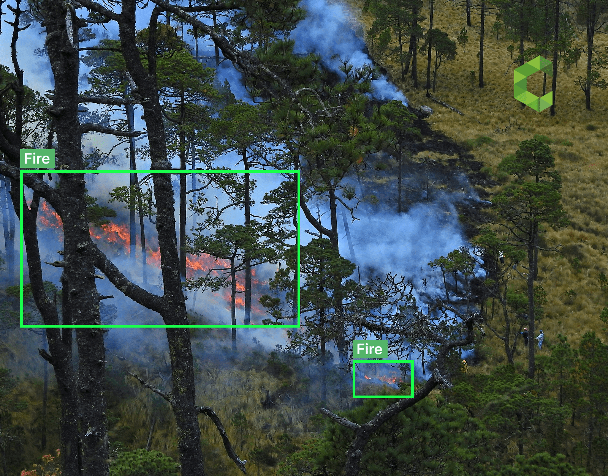
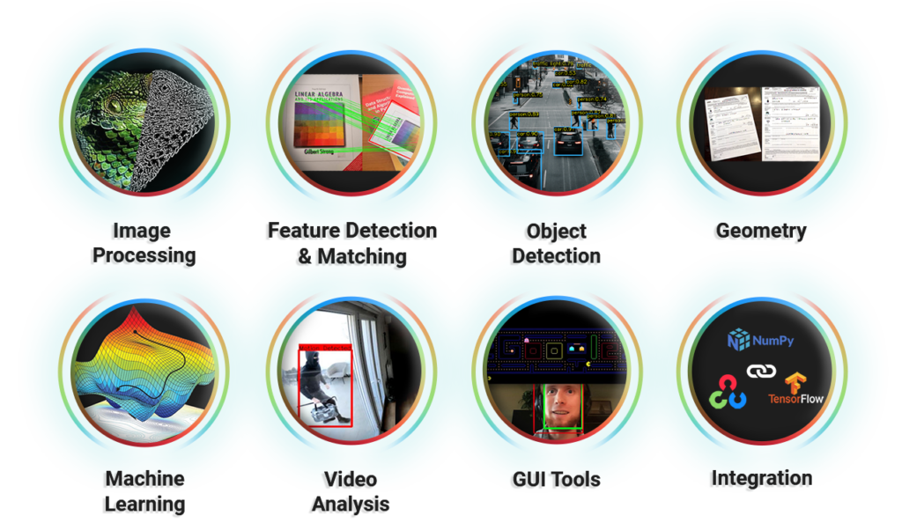
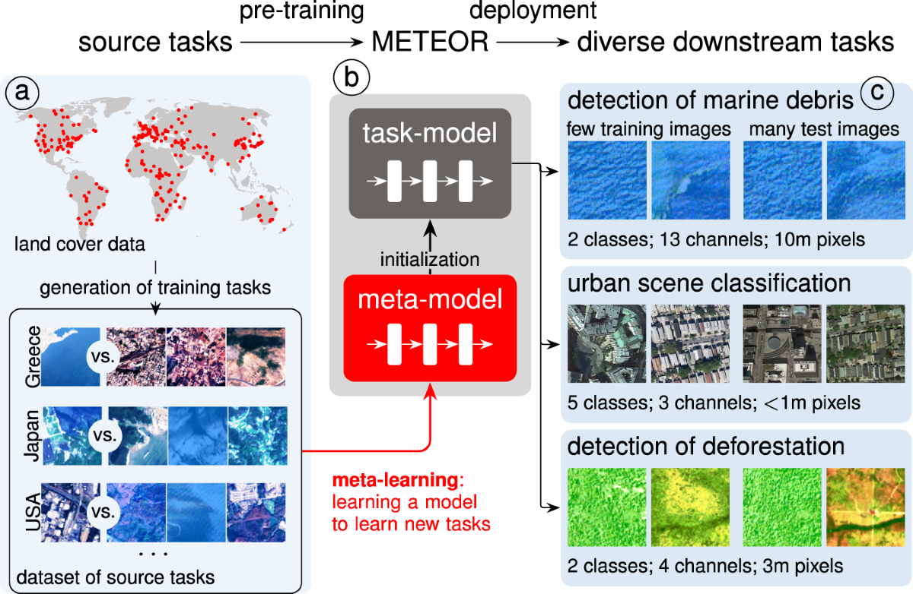
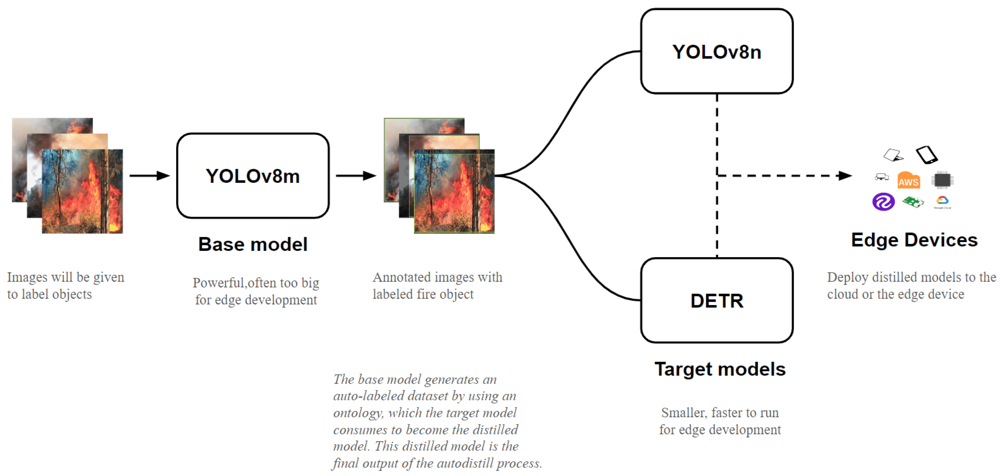

Every year around 70,000 wildfires occur worldwide, destroying forests and rendering them unfit for vegetation growth. This project proposes a computer vision-based deep learning model that can detect and alert for forest fires. Built using Python libraries like NumPy, OpenCV, and TensorFlow, this system provides early warnings, which are crucial for mitigating wildfire damage.

Introduction
Wildfires are natural disasters that cause massive destruction to ecosystems and communities. With the advancement in technology, computer vision and deep learning have shown significant potential in detecting early signs of wildfire, such as smoke and flames.
70,000 wildfires occur annually worldwide
Forest fires lead to massive carbon emissions and damage to biodiversity
Early detection can help minimize damage
Libraries Used
Several key machine learning and computer vision libraries were utilized in this project:
NumPy - For numerical computations and array operations.
OpenCV - For image processing and real-time video analysis.
Pillow - For image manipulation and transformations.
Matplotlib - For plotting and visualizing results.
TensorFlow - For deep learning and implementing models like CNN and MobileNet.
Methodology
The wildfire detection model was built using the following steps:
Data Collection: Images and videos of wildfires were collected from publicly available datasets.
Preprocessing: Image data was preprocessed using resizing, normalization, and augmentation techniques.
Model Selection: Deep learning models, including CNN and MobileNet, were used to classify and detect fire signals.
Training & Testing: The models were trained on labeled datasets and tested for accuracy, precision, and recall.
Evaluation: The performance of the model was evaluated using metrics like F1 score, confusion matrix, and accuracy.

Success and Failures
Success
The proposed model was able to achieve significant accuracy in detecting wildfire-related indicators, such as smoke and flames. With further training and fine-tuning of the model, the detection accuracy can be improved even further.
F1 score: 0.85
Precision: 0.88
Recall: 0.83
Failures
Despite the success, the model struggled with certain challenges:
False positives due to clouds or fog being mistaken for smoke.
False negatives due to poor image quality or low visibility of flames.
Challenges
The challenges faced during the development of this project were mainly due to environmental factors and data quality:
Image quality and lighting variations impacted detection performance.
Generalizing the model to different environments (dense forests, urban areas) was difficult.
Lack of diverse training data affected model robustness.

Future Work
There is potential to extend this project with the following advancements:
Deploying the model on edge devices like drones for real-time monitoring.
Incorporating object tracking and segmentation for better localization of fires.
Improving model generalization by training on a more diverse dataset.
Using advanced models like YOLO for faster detection in live video streams.

Conclusion
This project demonstrates that computer vision can be effectively applied to detect wildfires at an early stage, minimizing damage to ecosystems and communities. Through the use of deep learning models such as CNN and MobileNet, accurate detection of fire indicators like smoke and flames was achieved. Future improvements will further enhance the capabilities of such systems.